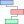

<!--
  A javascript program to produce workflows.
-->
<!doctype html>
<html>
<head>
	<style>
	h2{
		text-align: center;
		color: rgb(25,118,188);
	}
	h3{
		color: rgb(25,118,188);
	}
	button{
		text-align: center;
		color: rgb(25,118,188);
		border-color: rgb(25,118,188);
		background-color: white;
		padding: 16px;
		font-size: 16px;
		width: 100%;
	}
	body, html{
		height: 98%;
	}
	</style>
    <meta http-equiv="Content-Type" content="text/html; charset=UTF-8" />

	<title>Workflow Maker</title>

	<!-- Sets the basepath for the library if not in same directory -->
		<script type="text/javascript">
			mxBasePath = 'resources/mxgraph-master/javascript/src';
	</script>

	<!-- Loads and initializes the library -->
		<script type="text/javascript" src="resources/mxgraph-master/javascript/src/js/mxClient.js"></script>
<!--    	<script src="resources/pdftex.js"></script> -->
<!--    	<script src="resources/promise/promise.js"></script> -->

	<!-- Begin code -->
	<script type="text/javascript">
	//Start of the program, invoked by onLoad()
	function main(container)
	{
		// Checks if the browser is supported
		if (!mxClient.isBrowserSupported())
		{
			// Displays an error message if the browser is not supported.
			mxUtils.error('Browser is not supported!', 200, false);
		}
		else
		{
            window.onbeforeunload = function() {
              return "Are you sure you want to navigate away?";
            }
			// Creates the graph inside the given container
			var graph = new mxGraph(container);
			graph.panningHandler.useLeftButtonForPanning = true;
			graph.setPanning(true);
			graph.setAllowDanglingEdges(false);
			graph.connectionHandler.select = false;
			graph.view.setTranslate(20, 20);
			graph.setHtmlLabels(true);
			graph.foldingEnabled = false;
			graph.setTooltips(true);
			graph.setGridSize(10);
			container.addEventListener("wheel",function(evt){
				if(evt.ctrlKey) if(evt.deltaY<0)graph.zoomIn();else graph.zoomOut();
				else graph.view.setTranslate(graph.view.getTranslate().x,graph.view.getTranslate().y-30*Math.sign(evt.deltaY));
				evt.preventDefault();
			});
			//disable tooltips for anything that doesnt have a custom one
			mxCell.prototype.getTooltip = function(){return null;}

			//redirect selection to parent
			graph.selectCellForEvent = function(cell){
				if(this.isPart(cell)){
					cell=this.model.getParent(cell);
				}
				if(cell.isEdge()) {return null;}
				mxGraph.prototype.selectCellForEvent.apply(this, arguments);
			}
            graph.addListener(mxEvent.CLICK,function(sender,evt){
                var e=evt.getProperty('event');
                var cell = evt.getProperty('cell');
                if(cell instanceof CommentNode) if(!cell.state)cell.show(graph,cell.getGeometry().x+graph.view.getTranslate().x+10+'px',cell.getGeometry().y+cell.getGeometry().height+graph.view.getTranslate().y+10+'px');
            });
			//function that checks if it is a constituent
			graph.isPart = function(cell){
				var state = this.view.getState(cell);
				var style = (state != null) ? state.style : this.getCellStyle(cell);
				return style['constituent']=='1';
			}
			//Redirect drag to parent
			var graphHandlerGetInitialCellForEvent = mxGraphHandler.prototype.getInitialCellForEvent;
			mxGraphHandler.prototype.getInitialCellForEvent = function(me){
				var cell = graphHandlerGetInitialCellForEvent.apply(this, arguments);
				if (this.graph.isPart(cell)){
					cell = this.graph.getModel().getParent(cell)
				}
				return cell;
			};
			//Causes an update upon resize, if the resized object was a workflow node
			graph.resizeCell = function (cell, bounds, recurse){
				if(cell instanceof WFNode) {
					if(bounds.height<minCellHeight)bounds.height=minCellHeight;
					bounds.width=defaultCellWidth;
				}
				mxGraph.prototype.resizeCell.apply(this,arguments);
				if(cell instanceof WFNode) doLayout();
			}
			//disable actual movements when dragging. These are taken care of by doLayout, not by the move itself.
			graph.moveCells = function (cells, dx,dy,clone,target,evt,mapping){
                if(cells[0] instanceof CommentNode)return mxGraph.prototype.moveCells.apply(this,arguments);
				if(evt!=null && (evt.type=='mouseup' || evt.type=='pointerup')){
					dx=0;dy=0;
				}
				return mxGraph.prototype.moveCells.apply(this,arguments);
			}
			var ffL=0; //flag whether the layout is updating. If it is, we shouldnt wait before redrawing the preview.
			//Cause cells to snap to columns on preview
			graph.graphHandler.updatePreviewShape = function(){
				if(this.shape!=null && ffL==0){
					//creates a new variable for the initial bounds,
					//otherwise once the node moves the preview will be
					//drawn relative to the NEW position but with the OLD
					//displacement, leading to a huge offset.
					if(this.shape.initboundx==null){this.shape.initboundx=this.pBounds.x;this.shape.offsetx=this.shape.initboundx-this.cells[0].getGeometry().x;}
					if(this.shape.initboundy==null){this.shape.initboundy=this.pBounds.y;this.shape.offsety=this.shape.initboundy-this.cells[0].getGeometry().y;}
					//redraw the bounds. This is the same as the original function we are overriding, however
					//initboundx has taken the place of pBound.x
					this.shape.bounds = new mxRectangle(Math.round(this.shape.initboundx + this.currentDx - this.graph.panDx),
							Math.round(this.shape.initboundy + this.currentDy - this.graph.panDy), this.pBounds.width, this.pBounds.height);
					this.shape.redraw();
					//Get the selected cells
					var cells = this.cells;
					var preview = this.shape.bounds.getPoint();
					//Unfortunately, the preview uses the position relative to the current panned window, whereas everything else uses the real positions. So we figure out the offset between these
					//at the start of the drag.
					var newx = preview.x-this.shape.offsetx;
					var newy = preview.y-this.shape.offsety;
					//for single WFNodes, we will snap during the preview
					if(cells.length==1 && cells[0] instanceof WFNode) {
						var cell = cells[0];
						if(cell.isHead)newx=newx-defaultCellWidth/2+colIconSize/2; //Adjusts for the fact that the column heads are smaller but should still be centered
						//Check to see if the x position should be changed
						if(newx != columnPos(cell.column)){
							//find closest column
							var newCol=cell.column;
							var diff = columnPos(newCol)-newx;
							for(var i=0;i<columnArray.length;i++){
								var newdiff = newx-columnPos(columnArray[i]);
								if(Math.abs(newdiff)<Math.abs(diff)){
									diff=newdiff;
									newCol=columnArray[i];
								}
							}
							//snap to the column
							if(cell.column!=newCol && cell.isHead){ //column has changed for a head. Swap the indices
								var newColIndex = columnArray.indexOf(newCol);
								var oldColIndex = columnArray.indexOf(cell.column);
								columnArray[oldColIndex]=newCol;
								columnArray[newColIndex]=cell.column;
								ffL=1;
							}else if(cell.column!=newCol){
								if(cell==startNode&&cell.next!=null){cell.next.column=newCol;cell.next.updateStyle(graph,masterColumnArray,columnStyles);}
								cell.column=newCol;
								adjustHorizontal(cell);
								cell.updateStyle(graph,masterColumnArray,columnStyles);
								ffL=1;
							}

						}
						//Check to see if the y position should be changed, and initiate the switch if so
						if(!cell.isHead && cell != startNode){
							//Handle the previous cell
							var prevy = graph.getCellGeometry(cell.previous).y + graph.getCellGeometry(cell.previous).height/2;
							if(newy<prevy && cell.previous!=startNode){
								var previous = cell.previous;
								var next = cell.next;
								var pprevious = cell.previous.previous;
								pprevious.next=cell;
								previous.previous = cell;
								if(next!=null)previous.next=next;
								else previous.next = null;
								cell.previous=pprevious;
								cell.next = previous;
								if(next!=null) next.previous=previous;
								ffL=1;
							}else if(cell.next!=null){ //handle the next cell
								var nexty = graph.getCellGeometry(cell.next).y;-graph.getCellGeometry(cell.next).height/2;
								if(newy>nexty){
									var previous = cell.previous;
									var next = cell.next;
									var nnext = cell.next.next;
									previous.next = next;
									cell.previous = next;
									if(nnext!=null)cell.next=nnext;
									else cell.next=null;
									next.previous = previous;
									next.next = cell;
									if(nnext!=null)nnext.previous = cell;
									ffL=1;
								}
							}
						}
					}else if(cells.length==1 && cells[0] instanceof StratNode){//The strategy nodes, delineating the edges of the strategies, are different enough that they should be handled separately
						var cell=cells[0];
						var align=cell.alignwith;
						//Handle the previous cell
						var prevy = graph.getCellGeometry(align.previous).y + graph.getCellGeometry(align.previous).height/2;
						if(newy<prevy && align.previous!=startNode){
							if(!cell.isAtMax())cell.alignwith=align.previous;
							ffL=1;
						}else if(align.next!=null){ //handle the next cell
							var nexty = graph.getCellGeometry(align.next).y;-graph.getCellGeometry(align.next).height/2;
							if(newy>nexty){
								if(!cell.isAtMin())cell.alignwith=align.next;
								ffL=1;
							}
						}


					}
					if(ffL==1)doLayout();

				}

			}

			//display a popup menu when user clicks on cell, but do not select the cell
			graph.panningHandler.popupMenuHandler = false;
			//expand menus on hover
			graph.popupMenuHandler.autoExpand = true;
			//create minimap
			var outline = document.getElementById('outlineContainer');
			var outln = new mxOutline(graph, outline);


			//Create new functions related to the creation of a WFNode object
			graph.insertWFNode = function (parent, id, value, x, y, width, height, style,column, relative){
				var vertex = this.createWFNode(parent, id, value, x, y, width, height, style,column, relative);
				return this.addCell(vertex, parent);
			}
			graph.createWFNode = function(parent, id, value,x, y, width, height, style,column, relative){
				var geometry = new mxGeometry(x, y, width, height);
				geometry.relative = (relative != null) ? relative : false;
				var vertex = new WFNode(value, geometry, style,column);
				vertex.setId(id);
				vertex.setVertex(true);
				vertex.setConnectable(true);
				return vertex;
			};
			//Create new functions related to the creation of a WFIcon object
			graph.insertWFIcon = function (parent, id, value, x, y, width, height, style, relative){
				var vertex = this.createWFIcon(parent, id, value, x, y, width, height, style, relative);
				return this.addCell(vertex, parent);
			}
			graph.createWFIcon = function(parent, id, value,x, y, width, height, style, relative){
				var geometry = new mxGeometry(x, y, width, height);
				geometry.relative = (relative != null) ? relative : false;
				var vertex = new WFIcon(value, geometry, style);
				vertex.setId(id);
				vertex.setVertex(true);
				vertex.setConnectable(true);
				return vertex;
			};
            graph.insertCommentNode = function(parent,text,x,y){
                var vertex = new CommentNode(text,x,y);
                vertex.setVertex(true);
                vertex.setConnectable(false);
                return this.addCell(vertex,parent);
            }
			//Create new functions related to the creation of a strategy object
			graph.insertStrat = function(topAlign,bottomAlign,strategy){
				var top = new StratNode(topAlign,true);
				top.setVertex(true);
				top.setConnectable(true);
				var bottom = new StratNode(bottomAlign,false);
				bottom.setVertex(true);
				bottom.setConnectable(true);
                var colourTab = makeColourTab(strategy);
				addTabDelOverlay(colourTab);
				var newStrat = new StratTab(this.addCell(top,parent),this.addCell(bottom,parent),strategy);
                newStrat.Tab = this.addCell(colourTab,parent);
                colourTab.stratTab=newStrat;
				stratTabArray.push(newStrat);
				doLayout();
			}
            
            function makeColourTab(strategy){
                var tabSize=80,triSize=30;
                var tabColor="#ed4528";
                var enclose = graph.insertVertex(parent,null,"",0,0,tabSize+triSize,tabSize,"editable=0;movable=0;resizable=0;fillColor=none;strokeColor=none;");
                enclose.partOfStrat=true;
                graph.insertVertex(enclose,null,"",0,0,triSize,tabSize,"shape=triangle;editable=0;movable=0;resizable=0;fillColor=#ed4528;strokeColor=none;rotation=180;constituent=1;");
                graph.insertVertex(enclose, null, "",triSize, 0,tabSize, tabSize,"shape=label;editable=0;movable=0;resizable=0;imageAlign=right;fillColor=#ed4528;strokeColor=#ed4528;constituent=1;");
                var circleNode = graph.insertVertex(enclose, null, "",triSize+5, 5,tabSize-10, tabSize-10,"shape=ellipse;fillColor=white;strokeColor=#ed4528;editable=0;movable=0;resizable=0;constituent=1;");
                circleNode.partOfStrat=true;
                graph.insertVertex(circleNode, null, "",0, 0,tabSize-10,tabSize-10,"shape=label;fillColor=none;strokeColor=none;editable=0;movable=0;resizable=0;imageAlign=center;image=resources/data/"+strategy+"48.png;imageWidth=48;imageHeight=48;constituent=1;");
                return enclose;
            }

			//disable regular popup
			mxEvent.disableContextMenu(container);
			// Installs a popupmenu handler using local function (see below).
			graph.popupMenuHandler.factoryMethod = function(menu, cell, evt){return createPopupMenu(menu, cell, evt);};

			//set cell defaults and styles
			var defaultCellWidth=400;
			var minCellHeight=60;
			var cellSpacing = 40;
			var iconWidth = 58;
			var iconPadding = 5;
			var colIconSize = 160;
			var defaultIconStyle="shape=image;constituent=1;resizable=0;editable=0;strokeColor=none;fillColor=none;";
			var defaultTextStyle="whiteSpace=wrap;constituent=1;resizable=0;strokeColor=none;fontSize=12;fontColor=black;";
			var defaultColStyle="shape=label;fillColor=none;strokeColor=none;imageVerticalAlign=top;verticalAlign=bottom;imageAlign=center;resizable=0;imageWidth="+(colIconSize-40)+";imageHeight="+(colIconSize-40)+";fontSize=20;editable=0;fontStyle=5;fontColor=black;";
			var masterColumnArray=["ooc","ici","ics","ooci","oocs"]
			var columnArray=["ooc","ici","ics"]
			var columnStyles=['#C4DAFF','#FFE5E5','#E5FFE5','#C4DAFF','#C4DAFF']
			var stratTabArray=[];
            var commentArray=[];
			var defaultStyle="whiteSpace=wrap;absoluteArcSize=1;arcSize=15;rounded=1;strokeColor=black;strokeWidth=2;editable=0;fontColor=black;";
			var titleStyle="whiteSpace=wrap;resizable=0;movable=0;fontSize=22;fontStyle=1;fontColor=black;fillColor=none;strokeColor=none;";
			var nameOfFile="output";
			var wfstartx; //horizontal position of the start of the workflow (after legend, etc, is put in). Determined during the first cell placement.

			//from a column string, get its current position
			function columnPos(colName){
				var index=columnArray.indexOf(colName);
				if(index==-1)index++;
				return wfstartx+index*(defaultCellWidth-2*cellSpacing)
			};


			//set up icon and strategy arrays
			var leftIconArray=['solo','group','class']
			var leftIconTextArray=['Individual Work','Work in Groups','Whole Class']
			var leftIconInfoArray=['Students work individually, whether at home or in class.',
				'Students work either in pairs or in groups.',
				'This task is completed collaboratively (or competitively) as a class, such as class discussions or games that are done with the participation of all class members.']
			var rightIconArray=['problem','research','reading','write','discuss','present','peerreview','evaluate','quiz','play','create','practice']
			var rightIconTextArray=['Problem Solving','Research','Reading','Writing','Discussion','Present','Peer-Review','Instructor Evaluation','Quiz','Play','Create','Iteration']
			var rightIconInfoArray=['Students are engaged in problem solving activities. What counts as problem solving will vary based on the course.',
				'The students are engaged in researching, finding, or sifting through information.',
				'The students are assigned a specific reading (if they must determine on their own what to read, consider using the research icon).',
				'Students complete a writing assignment, such as a reflective writing, an essay, or even just a short written response to a question.',
				'The students are engaged in a discussion, either as a class, as groups, or in an online module.',
				'Students present their work, either as a traditional presentation or in a less formal setting such as a poster or a demo for the class.',
				'The students review each others work, providing corrections or constructive criticism.',
				"The instructor evalues the students' work, providing feedback",
				'The students complete a quiz, answering a series of questions, whether individually or in groups.',
				'Some activities use games or game-like activities to engage students. These rarely fit into other categories, and can be labeled with this icon.',
				"The students create something novel. This should be something beyond an essay or presentation, this corresponds to the 'Create' level of Bloom's Taxonomy.",
				'The students practice or iterate a previous task to reinforce their knowledge. This avoids having to repeat sections of your workflow when an activity is repetitive.'];
			var stratArray=['jigsaw','peer-instruction','case-studies','gallery-walk','reflective-writing','two-stage-exam','toolkit','one-minute-paper','distributed-problem-solving','peer-assessment'];
			var stratTitle=['Jigsaw','Peer Instruction','Case Studies','Gallery Walk','Reflective Writing','Two-Stage Exam','Toolkit','One Minute Paper','Distributed Problem Solving','Peer Assessment'];

			// Gets the default parent for inserting new cells. This
			// is normally the first child of the root (ie. layer 0).
			var parent = graph.getDefaultParent();

			//Add the overlay to create new cells
			var addPlusOverlay = function(cell){
				var overlay = new mxCellOverlay(new mxImage('resources/images/add48.png', 24, 24), 'Insert Node Below');
				overlay.getBounds = function(state){ //overrides default bounds
					var bounds = mxCellOverlay.prototype.getBounds.apply(this, arguments);
					var pt = state.view.getPoint(state, {x: 0, y: 0, relative: true});
					bounds.x = pt.x - bounds.width / 2;
					return bounds;
				};
				overlay.cursor = 'pointer';
				overlay.addListener(mxEvent.CLICK, function(sender, plusEvent){
					graph.clearSelection();
					insertNodeBelow(cell,true,cell.column);
					doLayout();
				});
				graph.addCellOverlay(cell, overlay);
			}
			//Create a new cell below the given one
			function insertNodeBelow(cell,isNew,column,left = "",right = "", textVal = "[insert text here]",height=minCellHeight){
				var leftImg="",rightImg="";
				if(left!="")leftImg = "image=resources/data/"+left+".png";
				if(right!="")rightImg = "image=resources/data/"+right+".png";
				var geo = graph.getCellGeometry(cell);
				var newNode = graph.insertWFNode(parent, null, "",geo.x, geo.y,defaultCellWidth, height,defaultStyle,column);
				var textNode = graph.insertVertex(newNode, null, textVal,iconWidth, 2,defaultCellWidth-2*iconWidth, height-4,defaultTextStyle);
				var leftText = "",rightText="";
				if(isNew){leftText="right click\nto edit icon";rightText="right click\nto edit icon";}
				var leftIcon = graph.insertWFIcon(newNode,null,leftText,iconPadding,iconPadding,iconWidth-2*iconPadding,height-2*iconPadding,defaultIconStyle+leftImg);
				leftIcon.isLeft=true;
				leftIcon.image=left;
				var rightIcon = graph.insertWFIcon(newNode,null,leftText,defaultCellWidth-iconWidth+iconPadding,iconPadding,iconWidth-2*iconPadding,height-2*iconPadding,defaultIconStyle+rightImg);
				rightIcon.image=right;
				newNode.text=textNode;
				newNode.lefticon=leftIcon;
				newNode.righticon=rightIcon;
				newNode.previous = cell;
				if(cell.next!=null){newNode.next=cell.next;cell.next.previous=newNode;}
				cell.next = newNode;
				addPlusOverlay(newNode);
				addDelOverlay(newNode);
				newNode.updateStyle(graph,masterColumnArray,columnStyles);
				return newNode;
			}
			//Add the overlay to delete cells
			var addDelOverlay = function(cell){
				var overlay = new mxCellOverlay(new mxImage('resources/images/del48.png', 24, 24), 'Delete Node');
				overlay.getBounds = function(state){ //overrides default bounds
					var bounds = mxCellOverlay.prototype.getBounds.apply(this, arguments);
					var pt = state.view.getPoint(state, {x: 0, y: 0, relative: true});
					bounds.y = pt.y-bounds.width/2-cell.getGeometry().height/2;
					return bounds;
				};
				overlay.cursor = 'pointer';
				overlay.addListener(mxEvent.CLICK, function(sender, plusEvent){
					if(mxUtils.confirm("Delete this node?")){
						graph.clearSelection();
						for(var i=0;i<stratTabArray.length;i++){
							if(stratTabArray[i].top.alignwith==cell){
								if(stratTabArray[i].bottom.alignwith==cell){
									stratTabArray[i].deleteSelf(graph);
									stratTabArray.splice(i,1);
									i--;
								}else stratTabArray[i].top.alignwith=cell.next;
							}else if(stratTabArray[i].bottom.alignwith==cell){
								stratTabArray[i].bottom.alignwith=cell.previous;
							}
						}
						if(cell.next!=null){
							cell.next.previous=cell.previous;
							cell.previous.next=cell.next;
						}else{
							cell.previous.next=null;
						}
						graph.removeCells([cell]);
						doLayout();
					}
				});
				graph.addCellOverlay(cell, overlay);
			}
			//Add the overlay to delete a strategy tab
			var addTabDelOverlay = function(cell){
				var overlay = new mxCellOverlay(new mxImage('resources/images/del48.png', 24, 24), 'Delete Strategy');
				overlay.getBounds = function(state){ //overrides default bounds
					var bounds = mxCellOverlay.prototype.getBounds.apply(this, arguments);
					var pt = state.view.getPoint(state, {x: 0, y: 0, relative: true});
					bounds.y = pt.y-bounds.width/2-cell.getGeometry().height/2;
					return bounds;
				};
				overlay.cursor = 'pointer';
				overlay.addListener(mxEvent.CLICK, function(sender, plusEvent){
					if(mxUtils.confirm("Delete this strategy?")){
						graph.clearSelection();
						var currentStratTab=cell.stratTab;
						stratTabArray.splice(stratTabArray.indexOf(currentStratTab),1);
						currentStratTab.deleteSelf(graph);
						doLayout();
					}
				});
				graph.addCellOverlay(cell, overlay);
			}
            //Add the overlay to delete a comment
			var addCommentDelOverlay = function(cell){
				var overlay = new mxCellOverlay(new mxImage('resources/images/del48.png', 12, 12), 'Delete Comment');
				overlay.getBounds = function(state){ //overrides default bounds
					var bounds = mxCellOverlay.prototype.getBounds.apply(this, arguments);
					var pt = state.view.getPoint(state, {x: 0, y: 0, relative: true});
					bounds.y = pt.y-bounds.width/2-cell.getGeometry().height/2;
					return bounds;
				};
				overlay.cursor = 'pointer';
				overlay.addListener(mxEvent.CLICK, function(sender, plusEvent){
					if(mxUtils.confirm("Delete this comment?")){
						graph.clearSelection();
						commentArray.splice(commentArray.indexOf(cell),1);
						graph.removeCells([cell]);
					}
				});
				graph.addCellOverlay(cell, overlay);
			}
			//This moves all the cells to where they are supposed to be, relative to the start node.
			//We don't expect there to be a tremendous number of nodes, so it's probably okay to move everything each time there is an update.
			var doLayout = function(){
				putBelow(columnNodes[0],startNode);
				if(startNode.next!=null)startNode.column=startNode.next.column;
				adjustHorizontal(startNode);
				for(var i=0;i<columnNodes.length;i++)adjustHorizontal(columnNodes[i]);
				var current = startNode;
				while(current.next != null){
					var next = current.next;
					graph.removeCells(next.edges);
					putBelow(current,next);
					adjustHorizontal(next);
					connector = graph.insertEdge(parent,null,'',current,next,"editable=0;edgeStyle=orthogonalEdgeStyle;strokeColor=black;");
					current = next;
					doInteriorLayout(current);
				}
				for(var i=0;i<stratTabArray.length;i++){
					if(stratTabArray[i].top.edges!=null)graph.removeCells(stratTabArray[i].top.edges);
					adjustStratPositions(stratTabArray[i]);
				};
				if(ffL==1)ffL=0;
			};

			var putBelow = function(top,bottom){
				var geoT = graph.getCellGeometry(top);
				var geoB = graph.getCellGeometry(bottom);
				ymove = geoT.y + geoT.height + cellSpacing - geoB.y;
				graph.moveCells([bottom],0,ymove);
			};

			var adjustHorizontal = function(cell){
				var geo = graph.getCellGeometry(cell);
				xmove = columnPos(cell.column)-geo.x;
				if(cell.isHead)xmove=xmove+defaultCellWidth/2-colIconSize/2;
				graph.moveCells([cell],xmove,0);
			};

			var doInteriorLayout = function(cell){
				geoC = graph.getCellGeometry(cell);
				cell.lefticon.setGeometry(new mxGeometry(iconPadding,iconPadding,iconWidth-2*iconPadding,geoC.height-2*iconPadding,true));
				cell.righticon.setGeometry(new mxGeometry(geoC.width-iconWidth+iconPadding,iconPadding,iconWidth-2*iconPadding,geoC.height-2*iconPadding,true));
				cell.text.setGeometry(new mxGeometry(iconWidth, 2,geoC.width-2*iconWidth, geoC.height-4,true));

			};

			var adjustStratPositions = function(StratTab){
				var top = StratTab.top;
				var bottom = StratTab.bottom;
                var tab = StratTab.Tab;
				var ty=top.alignwith.getGeometry().y;
				var by=bottom.alignwith.getGeometry().y+bottom.alignwith.getGeometry().height-bottom.getGeometry().height;
				var x = rightMost(top.alignwith,bottom.alignwith).getGeometry().x+cellSpacing+defaultCellWidth;
				graph.moveCells([top],x-top.getGeometry().x,ty-top.getGeometry().y);
				graph.moveCells([bottom],x-bottom.getGeometry().x,by-bottom.getGeometry().y);
				addedEdge = graph.insertEdge(parent,null,'',top,bottom,"editable=0;strokeColor=black;strokeWidth=4;endArrow=none;");
                addedEdge.partOfStrat=true;
                graph.moveCells([tab],x+20-tab.getGeometry().x,(bottom.alignwith.getGeometry().y+bottom.alignwith.getGeometry().height+ty)*0.5-tab.getGeometry().height/2-tab.getGeometry().y)
                graph.orderCells(false,[tab])
			};

			var rightMost = function(topAlign,botAlign){
				var rightmost = topAlign;
				var current = rightmost;
				while(current!=botAlign){
					current=current.next;
					if(current.getGeometry().x>rightmost.getGeometry().x)rightmost=current;
				}
				return rightmost;
			};

			//Add the first cells
			// Adds cells to the model in a single step
			graph.getModel().beginUpdate();
			var startNode,columnNodes=[];
			var legendNode,titleNode,authorNode;
			try
			{
				legendNode = graph.insertVertex(parent,null,'',cellSpacing,cellSpacing,200,(leftIconArray.length+rightIconArray.length)*30+104,'editable=0;fillColor=#e6e6e6;movable=0;resizable=0;strokeColor=black;');
				wfstartx=legendNode.getGeometry().x+legendNode.getGeometry().width+cellSpacing
				titleNode = graph.insertVertex(parent,null,'[Insert Title Here]',wfstartx,cellSpacing,300,50,titleStyle);
				titleNode.valueChanged = function(value){if(nameOfFile.indexOf("FROMLOAD")==-1)nameOfFile=value.replace(/[^\w]/gi,'');mxCell.prototype.valueChanged.apply(this,arguments);}
				authorNode = graph.insertVertex(parent,null,'[Insert Author Here]',titleNode.getGeometry().x+titleNode.getGeometry().width+cellSpacing,cellSpacing,300,50,titleStyle);
				columnNodes.push(graph.insertWFNode(parent, null,'Out of Class',0,3*cellSpacing, colIconSize, colIconSize,defaultColStyle+'image=resources/data/home.png;',"ooc"));
				columnNodes.push(graph.insertWFNode(parent, null,'In Class (Instructor)',0,3*cellSpacing, colIconSize, colIconSize,defaultColStyle+'image=resources/data/instructor.png;',"ici"));
				columnNodes.push(graph.insertWFNode(parent, null,'In Class (Students)',0,3*cellSpacing, colIconSize, colIconSize,defaultColStyle+'image=resources/data/noinstructor.png;',"ics"));
				for(var i=0;i<columnNodes.length;i++)columnNodes[i].isHead=true;
				startNode = graph.insertWFNode(parent, null, 'Begin Here', 0, columnNodes[0].getGeometry().height+columnNodes[0].getGeometry().y+cellSpacing, defaultCellWidth, minCellHeight,defaultStyle+"editable=0;resizable=0;fillColor=none;","ooc");
				addPlusOverlay(startNode);
				graph.insertVertex(legendNode,null,"Context Icons:\n Who is doing the task?",0,0,200,40,'editable=0;constituent=1;movable=0;resizable=0;fillColor=none;strokeColor=none;fontSize=14;fontColor=black;fontStyle=1;');
				for(var i=0;i<leftIconArray.length;i++){graph.insertVertex(legendNode,null,leftIconTextArray[i],0,40+20*i+10*(1+i),200,20,'editable=0;constituent=1;shape=label;movable=0;resizable=0;fillColor=none;strokeColor=none;image=resources/data/'+leftIconArray[i]+'.png;');}
				graph.insertVertex(legendNode,null,'',10,40+20*(leftIconArray.length)+10*(leftIconArray.length+1),180,1,'editable=0;constituent=1;fillColor=black;strokeColor=black;');
				graph.insertVertex(legendNode,null,"Task Icons:\n What are they doing?",0,40+20*(leftIconArray.length)+10*(2+leftIconArray.length),200,40,'editable=0;constituent=1;movable=0;resizable=0;fillColor=none;strokeColor=none;fontSize=14;fontColor=black;fontStyle=1;');
				for(var i=0;i<rightIconArray.length;i++){graph.insertVertex(legendNode,null,rightIconTextArray[i],0,84+20*(i+leftIconArray.length)+10*(2+i+leftIconArray.length),200,20,'editable=0;constituent=1;movable=0;resizable=0;shape=label;fillColor=none;strokeColor=none;image=resources/data/'+rightIconArray[i]+'.png;');}
				doLayout();
			}
			finally
			{
				// Updates the display
				graph.getModel().endUpdate();
			}

			//Add the toolbar
			var tbcontent = document.createElement('div');
			tbcontent.style.padding = '4px';
			var tb = new mxToolbar(tbcontent);
			tb.addItem('New File','resources/images/newfile32.png',function(evt){newFile();});
			tb.addItem('Save File','resources/images/save32.png',function(evt){saveFile();});
			tb.addItem('Load File','resources/images/open32.png',function(evt){loadFile();});
			tb.addItem('Printer Friendly Version','resources/images/print32.png',function(evt){printerVersion()});
			tb.addItem('Export to .tex','resources/images/tex32.png',function(evt){texFile();});
			tb.addItem('Download tex data package','resources/images/package32.png',function(evt){getTexPackage();});
			tb.addItem('Help','resources/images/info32.png',function(evt){infoAbout("general",evt)});
			tbwnd = new mxWindow('Tools',tbcontent,0,0,48,304,false);
			tbwnd.setMaximizable(false);
			tbwnd.setScrollable(false);
			tbwnd.setResizable(false);
			tbwnd.setVisible(true);

			//Add the strategies bar
			var sbcontent = document.createElement('div');
			sbcontent.style.padding = '4px';
			var sb = new mxToolbar(sbcontent);
			for(var i=0;i<stratArray.length;i++){
				function tempfunc(k){
					var k;
					sb.addItem(stratTitle[i],'resources/data/'+stratArray[i]+'48.png',function(evt){sbarClick(evt,k);});
				}
				tempfunc(i);
			}
			sb.addItem("What's This?",'resources/images/info48.png',function(evt){infoAbout("strategy",evt);});
			sbwnd = new mxWindow('Strategies',sbcontent,96,0,56*(stratArray.length+1),82,true);
			sbwnd.setMaximizable(false);
			sbwnd.setScrollable(false);
			sbwnd.setResizable(false);
			sbwnd.setVisible(true);


		}


		//For popup menu creation
		function createPopupMenu(menu, cell, evt){
			var model = graph.getModel();
            graph.clearSelection();
			if (cell != null){
				if (cell instanceof WFIcon){
					menu.addItem("No Icon","",function(){
						graph.setCellStyle("image=none;"+defaultIconStyle,[cell]);
						cell.iconArray="";
						graph.cellLabelChanged(cell,"");
					});
					var iconArray=rightIconArray;
					if(cell.isLeft)iconArray=leftIconArray;
					var iconTextArray=rightIconTextArray;
					if(cell.isLeft)iconTextArray=leftIconTextArray;
					for(var i=0;i<iconArray.length;i++){
						function tempfunc(k){
							var k;
							menu.addItem(iconTextArray[i],'resources/data/'+iconArray[i]+'24.png',function(){
								graph.setCellStyle("image=resources/data/"+iconArray[k]+".png;"+defaultIconStyle,[cell]);
								cell.image=iconArray[k];
								graph.cellLabelChanged(cell,"");
							});
						}
						tempfunc(i);
					}
					menu.addSeparator();
				} else if(graph.isCellEditable(cell)){
					menu.addItem('Edit label', 'resources/images/text24.png', function(){
						graph.startEditingAtCell(cell);
					});
					menu.addSeparator();
				} else if(cell.isEdge()){
					var firstNode=cell.getTerminal(true);
					menu.addItem("Insert Blank Node Below","resources/images/add24.png",function(){
						insertNodeBelow(firstNode,true,firstNode.column);
					});
					var stratMenu = menu.addItem('Insert Strategy',"resources/images/strat24.png",null);
					for(var i=0;i<stratArray.length;i++){
						function tempfunc(k){
							var k;
							menu.addItem(stratTitle[i],'resources/data/'+stratArray[i]+'24.png',function(evt){insertStrategy('resources/strategies/'+stratArray[k]+'.csv',firstNode,true,k);},stratMenu);
						}
						tempfunc(i);
					}
					menu.addSeparator();
				}
			}

			//menu.addItem('Fit', 'resources/images/zoom.gif', function(){graph.fit();});
			//menu.addItem('Actual', 'resources/images/zoomactual.gif', function(){graph.zoomActual();});
			//menu.addSeparator();
			//menu.addItem('Print', 'resources/images/printer.png', function(){var preview = new mxPrintPreview(graph, 1);preview.open();});
			menu.addItem('Printer-Friendly Version', 'resources/images/print24.png', function(){
				printerVersion();

			});
            menu.addItem('Add Comment','resources/images/comment24.png',function(){
                addComment(evt);
            })
			menu.addItem("What's this?",'resources/images/info24.png',function(){
				if(cell != null){
					if(cell==startNode)infoAbout("startnode",evt);
					else if((cell instanceof WFNode&&!cell.isHead) || (graph.isPart(cell) && cell.getParent() instanceof WFNode && !cell.getParent().isHead))infoAbout("node",evt);
					else if(cell instanceof WFNode&&cell.isHead)infoAbout("columns",evt);
					else if(cell==legendNode || (graph.isPart(cell) && cell.getParent()==legendNode))infoAbout("legend",evt);
                    else if(cell.partOfStrat||cell.getParent().partOfStrat)infoAbout("strut",evt);
					else infoAbout("general");
				} else infoAbout("general");
			});
		};

		function newFile(){
			if(mxUtils.confirm("Create a new file? You will lose any unsaved work.")){
				window.location.reload();
			}
		};

		function saveFile(){
			var outString = createOutString();
			var file = new Blob([outString], {type: "data:text/csv;charset=utf-8;"});
			var filename = nameOfFile.replace("FROMLOAD","")+'.csv';
			if (window.navigator.msSaveOrOpenBlob) // IE10+
				window.navigator.msSaveOrOpenBlob(file, filename);
			else { // Others
				var a = document.createElement("a"),
						url = URL.createObjectURL(file);
				a.href = url;
				a.download = filename;
				a.target="save as";
				document.body.appendChild(a);
				a.click();
				setTimeout(function() {
					document.body.removeChild(a);
					window.URL.revokeObjectURL(url);
				}, 0);
   			}

		};

		function createOutString(){
			var outString = "";
			outString += "title,"+makePH(titleNode.getValue())+","+makePH(authorNode.getValue())+"\n";
			outString += "col,"+columnArray.join(",") + "\n";
			var current = startNode;
            nodeArray=[];
			while (current.next != null){
				current = current.next;
                nodeArray.push(current);
				outString += "node,"+current.column + "," + current.lefticon.image + "," + current.righticon.image + "," + makePH(current.text.value) + "," + current.getGeometry().height + "\n";
			}
            for(var i=0;i<stratTabArray.length;i++){
                var currentTab = stratTabArray[i];
                var thisColumn = rightMost(currentTab.top.alignwith,currentTab.bottom.alignwith).column;
                outString+="strat,"+nodeArray.indexOf(currentTab.top.alignwith)+","+nodeArray.indexOf(currentTab.bottom.alignwith)+","+thisColumn+","+currentTab.strategy+"\n";
            }
            for(var i=0;i<commentArray.length;i++){
                var currentComment=commentArray[i];
                outString+="comment,"+currentComment.getGeometry().x+","+currentComment.getGeometry().y+","+makePH(currentComment.text)+"\n";
            }
			return outString;
		};

		var fileLoader = document.createElement("input");
		fileLoader.type="file";
		fileLoader.accept=".csv";
		fileLoader.addEventListener('change',loadNewFile);


		function loadFile(){
			fileLoader.click();
		};

		function loadNewFile(){
			var reader = new FileReader();
			reader.readAsText(fileLoader.files[0]);
			nameOfFile=fileLoader.files[0].name.replace(".csv","FROMLOAD");
			reader.onload = function(evt){
				var inString = evt.target.result;
				var inArray = parseFile(inString);
				createWF(inArray,startNode,false);
			}
		};

		function parseFile(inString){
			var lineArray = inString.split("\n");
			var inArray = [];
			for(var i=0;i<lineArray.length;i++){
				inArray.push(lineArray[i].split(","));
			}
			return inArray;
		}

		function createWF(inArray, firstNode, append){ //creates a workflow from a data array. The append variable determines whether or not new nodes are appended, if it is false everything is deleted first.
			graph.clearSelection();
			var titleArray=getThisArray(inArray,"title");
			var nodeArray=getThisArray(inArray,"node");
			var colArray=getThisArray(inArray,"col");
			var strategyArray=getThisArray(inArray,"strat");
            var comsArray=getThisArray(inArray,"comment");
			if(!append){
				//delete everything
				if(firstNode.next!=null)deleteAll(firstNode.next);
				firstNode.next=null;
				graph.cellLabelChanged(titleNode,removePH(titleArray[0][0]));
				graph.cellLabelChanged(authorNode,removePH(titleArray[0][1]));
				columnArray=colArray[0];
			}
			var currentNode = firstNode;
			var nextNode = firstNode.next;
			var arrayOfNodes=[];
			for(var i=0;i<nodeArray.length;i++){
				if(nodeArray[i].length>3){
					var column = nodeArray[i][0];
					if(i==0 && firstNode == startNode)startNode.column=column;
					var left = nodeArray[i][1];
					var right = nodeArray[i][2];
					var text = nodeArray[i][3];
					var height = minCellHeight;
					if(nodeArray[i].length>4)height=parseInt(nodeArray[i][4]);
					currentNode = insertNodeBelow(currentNode,false,column,left,right,removePH(text),height);
					arrayOfNodes.push(currentNode);
				}
			}
			if(nextNode!=null){
				currentNode.next=nextNode;
				nextNode.previous=currentNode;
			}
			for(var i=0;i<strategyArray.length;i++){
				graph.insertStrat(arrayOfNodes[strategyArray[i][0]],arrayOfNodes[strategyArray[i][1]],strategyArray[i][3]);
			}
            for(var i=0;i<comsArray.length;i++){
                addComment(null,parseInt(comsArray[i][0]),parseInt(comsArray[i][1]),comsArray[i][2]);
            }
			doLayout();

		};

		function deleteAll(startDelete){//delete everything starting with the node startDelete
			var current = startDelete;
			while(current.next!=null){
				var next = current.next;
				graph.removeCells([current]);
				current = next;
			}
			graph.removeCells([current]);
            for(var i=0;i<stratTabArray.length;i++){
                if(stratTabArray[i].top.alignwith.parent==null||stratTabArray[i].bottom.alignwith.parent==null){
                    stratTabArray[i].deleteSelf(graph);
                    stratTabArray.splice(i,1);
                    i--;
                }
            }
            graph.removeCells(commentArray);
            commentArray=[];
		};

		function printerVersion(){
			var scale = mxUtils.getScaleForPageCount(1, graph);
			var preview = new mxPrintPreview(graph, scale);
			preview.open();
		};

		function getThisArray(dataArray,str){ //Gets the info out of the data array
			thisArray=[];
			for(var i=0;i<dataArray.length;i++){
				if(dataArray[i][0]==str)thisArray.push(dataArray[i].slice(1));
			}
			return thisArray;
		};

		//This function exports the file to LaTeX format.
		function texFile(){
			var colColours=["blue","red","green","blue","blue"];
			var dataArray = parseFile(createOutString());
			var titleArray=getThisArray(dataArray,"title");
			var nodeArray=getThisArray(dataArray,"node");
            var strategyArray=getThisArray(dataArray,"strat");

			var outString = "\\documentclass{article}\n"; //preamble stuff
			outString +="\\usepackage[margin=0.5in,papersize={54cm,80cm}]{geometry}\n"
			outString +="\\include{data/flowchartpreamble}\n";
			outString +="\\begin{document}\n\n";

			if(titleArray.length>0)outString +="\\addtitle{"+removePH(titleArray[0][0])+"}{"+removePH(titleArray[0][1])+"}\n\n";
			else outString +="\\addtitle{}{)}\n\n";
			outString +="\\begin{tikzpicture}[node distance=0.7cm and -3cm]\n\n";
			outString +="\\noratings\n\n";
			var nodeString="";
			var connectString="";
            var stratString="";

			var prevTitle="start";
			var prevCol="";
			if(nodeArray.length>0&&nodeArray[0]!="")prevCol=nodeArray[0][0];
			nodeString+="\\start{"+prevCol+"}\n\n";
			var columnUse=[prevCol];
			for(var i=0;i<nodeArray.length;i++){
				if(nodeArray[i]=="")continue;
				var nodeTitle=nodeArray[i][2]+i;
				var lineString="\\node("+nodeTitle+")";
				var col = nodeArray[i][0];
				if(!columnUse.includes(col))columnUse.push(col);
				lineString+="["+colColours[masterColumnArray.indexOf(col)]+"entry,below=of "+prevTitle+".south -| "+col+"]{\\";
				if(nodeArray[i][2]=="" && nodeArray[i][1]=="")lineString+="simpleentry{"+removePH(nodeArray[i][3])+"}";
				else lineString+="entry{"+nodeArray[i][1]+"}{"+prepForTex(nodeArray[i][3])+"}{"+nodeArray[i][2]+"}";
				lineString+="};\n\n";
				nodeString+=lineString;
				connectString+="\\draw[arrow] ("+prevTitle+") ";
				if(prevCol==col)connectString+="--";
				else connectString+="|-";
				connectString+=" ("+nodeTitle+");\n";
				prevTitle=nodeTitle;
				prevCol=col;
			}

			for(var i=0;i<columnUse.length;i++){
				outString+="\\column{"+columnUse[i].toUpperCase()+"}\n";
			}
            
            

			outString+="\n\n"+nodeString+"\n\n"+connectString+"\n\n";
            for(var i=0;i<strategyArray.length;i++){
                outString+="\\pedcomp{"+(i+1)+"}{"+nodeArray[strategyArray[i][0]][2]+strategyArray[i][0]+"}{"+nodeArray[strategyArray[i][1]][2]+strategyArray[i][1]+"}{"+strategyArray[i][2]+"}";
            }
            outString+="\n\n";
			outString+="\\legend{left= of start.north west, anchor=north east}\n\n";
			outString +="\\end{tikzpicture}\n";
			outString +="\\end{document}";


			var file = new Blob([outString], {type: "data:text;charset=utf-8;"});
			var filename = nameOfFile.replace("FROMLOAD","")+'.tex';
			if (window.navigator.msSaveOrOpenBlob) // IE10+
				window.navigator.msSaveOrOpenBlob(file, filename);
			else { // Others
				var a = document.createElement("a"),
						url = URL.createObjectURL(file);
				a.href = url;
				a.download = filename;
				a.target="save as";
				document.body.appendChild(a);
				a.click();
				setTimeout(function() {
					document.body.removeChild(a);
					window.URL.revokeObjectURL(url);
				}, 0);
   			}
			/*var pdftex = new PDFTeX();  //Not currently working due to memory issues? Requires investigation, but may be more trouble than it is worth.
			pdftex.set_TOTAL_MEMORY(1024*1024*1024).then(function(){
				pdftex.FS_createPath('/','resources/data',true,true).then(function(){
					pdftex.FS_createLazyFile('/resources/data', 'flowchartpreamble.tex', 'data/flowchartpreamble.tex', true, true).then(function(){
						pdftex.on_stdout = console.log;
						pdftex.on_stderr = console.log;
						pdftex.compile(outString).then(function(pdf){window.open(pdf)});
					});
				});
			});*/

		};

		function getTexPackage(){
			var a = document.createElement("a"),
					url = "resources/data.zip";
			a.href = url;
			document.body.appendChild(a);
			a.click();
			setTimeout(function() {
				document.body.removeChild(a);
				window.URL.revokeObjectURL(url);
			}, 0);
		};


		//Handles clicks to the strategy bar, creating a div with the required elements.
		function sbarClick(evt,index){

			//Creates Div that pops up with options upon click to strategy bar
			var clickDiv = document.createElement('div');
			clickDiv.style="-moz-border-radius:10px;-webkit-border-radius:10px;border-radius:10px"
			clickDiv.style.padding='4px';
			clickDiv.style.zIndex='3';
			clickDiv.style.position='absolute';
			var leftpos = parseInt(sbwnd.div.style.left)-42+56*index+'px';
			var toppos = parseInt(sbwnd.div.style.top)+4+parseInt(sbwnd.div.style.height)+'px';
			clickDiv.style.left=leftpos;
			clickDiv.style.top=toppos;
			clickDiv.style.background="white";
			clickDiv.style.width="130px";
			clickDiv.style.border="2px solid black";

			//Clickable link to the strategy on saltise.ca
			var saltiseIMG = mxUtils.createImage('resources/images/saltise.png');
			saltiseIMG.setAttribute('title', 'View on saltise.ca');
			saltiseIMG.style.cursor = 'pointer';
			saltiseIMG.style.width = '120px';
			saltiseIMG.style.height = '48px';
			saltiseIMG.style.padding='4px';
			saltiseIMG.style.border='1px solid black';
			mxEvent.addListener(saltiseIMG,'click',function(evt2){
				var url='http://www.saltise.ca/strategy/'+stratArray[index];
				window.open(url,'_blank');
			});

			//Click to add the strategy
			var addIMG = mxUtils.createImage('resources/images/add48.png');
			addIMG.setAttribute('title', 'Append to current workflow');
			addIMG.style.cursor = 'pointer';
			addIMG.style.width = '48px';
			addIMG.style.height = '48px';
			addIMG.style.padding='4px';
			mxEvent.addListener(addIMG,'click',function(evt2){
				insertStrategy('strategies/'+stratArray[index]+'.csv',lastNode(startNode),true,index);
			});

			//Identifies a strategy (i.e. adds strategy bracket to existing workflow)
			var stratIMG = mxUtils.createImage('resources/data/'+stratArray[index]+'48.png');
			stratIMG.setAttribute('Title', stratTitle[index]);
			stratIMG.style.cursor = 'pointer';
			stratIMG.style.width = '48px';
			stratIMG.style.height = '48px';
			stratIMG.style.padding='4px';
			mxEvent.addListener(stratIMG,'click',function(evt2){
				if(startNode.next==null)alert("Please insert at least one task before trying to identify a strategy!");
				else graph.insertStrat(startNode.next,startNode.next,stratArray[index]);
			});

			clickDiv.appendChild(stratIMG);
			clickDiv.appendChild(addIMG);
			clickDiv.appendChild(saltiseIMG);

			//Creates the small triangular div superimposed on the rounded square to look like a speech bubble
			var triDiv = document.createElement("div");
			triDiv.style.transform="rotate(45deg)";
			triDiv.style.zIndex='3';
			triDiv.style.position='absolute';
			triDiv.style.left=parseInt(leftpos)+54+'px';
			triDiv.style.top=parseInt(toppos)-8+'px';
			//triDiv.style.background='red';
			triDiv.style.width='0px';
			triDiv.style.height='0px';
			triDiv.style.borderBottom='24px solid transparent';
			triDiv.style.borderLeft='24px solid white';
			triDiv.style.height='0px';
			triDiv.style.content='';
			triDiv.style.overflow='hidden';
			triDiv.style.filter='drop-shadow(-3px -3px 0px black)';

			document.body.appendChild(clickDiv);
			document.body.appendChild(triDiv);

			//removes the div when the user clicks outside the element. To switch this to remove it on any clicks, just remove that first condition on the if.
			var outsideClickListener = function(evt2){
				if(!(clickDiv.contains(evt2.target)||triDiv.contains(evt2.target)) && evt2!=evt){
					document.body.removeChild(clickDiv);
					document.body.removeChild(triDiv);
					removeClickListener();
				}
			};

			function removeClickListener(){
				document.removeEventListener('click',outsideClickListener);
			};
			document.addEventListener('click',outsideClickListener);

		};

		function lastNode(firstNode){ //gets the last node in a chain
			var currentNode = firstNode;
			while(currentNode.next!=null){
				currentNode = currentNode.next;
			}
			return currentNode;
		};

		function insertStrategy(file,firstNode,append,index){
			createWF(parseFile(strategyFiles[index]),firstNode,append); //This is a temporary fix, since chrome does not allow the loading of local files even when the html is locally run.
		    /*var rawFile = new XMLHttpRequest();
		    rawFile.open("GET", file, false);
		    rawFile.onreadystatechange = function ()
		    {
		        if(rawFile.readyState === 4)
		        {
		            if(rawFile.status === 200 || rawFile.status == 0)
		            {
		                var inArray=parseFile(rawFile.responseText);
		                createWF(inArray,firstNode,true);
		            }
		        }
		    }
		    rawFile.send(null);*/
		};

		function genHelp(){ //A general help button to explain how to use this program
			var a = document.createElement('a'),url='resources/help.html';
			a.href=url;document.body.appendChild(a);
			a.click();
			setTimeout(function() {
				document.body.removeChild(a);
				window.URL.revokeObjectURL(url);
			}, 0);

		};

		function infoAbout(topic,evt){ //Handles calls to get more information.
			var clickDiv = document.createElement('div');
			clickDiv.style.padding='4px';
			clickDiv.style.zIndex='3';
			clickDiv.style.position='absolute';
			var leftpos = '200px';
			var toppos = '200px';
			clickDiv.style.left=leftpos;
			clickDiv.style.top=toppos;
			clickDiv.style.background="white";
			clickDiv.style.width="600px";
			clickDiv.style.height='400px';
			clickDiv.style.border="2px solid black";
			clickDiv.style.overflowY="scroll";

			clickDiv.appendPar = function(text){
				var p = document.createElement("p")
				p.innerHTML = text;
				this.appendChild(p);
			}
			clickDiv.appendH = function(text,num=2){
				var h = document.createElement("h"+num)
				h.innerHTML = text;
				this.appendChild(h);
			}

			switch(topic){
				case "startnode":
				clickDiv.appendH("The Start Node");
				clickDiv.appendPar("This node marks the start of the workflow. As you add tasks (by clicking the  symbol at the bottom) you will be able to construct a step by step procedure, or script, for your activity.");
				break;
				case "node":
				clickDiv.appendH("Tasks");
				clickDiv.appendPar("A task represents a single event or piece of the activity. Each task is composed of:<ul><li>A text field, describing this step of the activity</li><li>A context icon on the right, showing whether a task is completed individually, as a group, or as a class</li><li>A task icon, showing what category the task falls under</li></ul>The icons are meant to denote tasks that require student engagement, they can (and should) be left out for small procedural steps, such as splitting the students into groups.");
				clickDiv.appendH("Editing Tasks:",3);
				clickDiv.appendPar("To change a task's text, right click on the text. To change the icons, right click on the icons.");
				clickDiv.appendH("Adding New Tasks:",3);
				clickDiv.appendPar("You can add new tasks by clicking the  symbol at the bottom of a task. The new task will be added below, with any further ones shifted downward. You can delete a task by clicking the  symbol.");
				clickDiv.appendH("The Columns:",3);
				clickDiv.appendPar("The columns, shown by the icons at the top of the page, represent whether a task is completed at home, or whether it is primarily instructor-led or student-led. Tasks can be dragged horizontally to change their column, or vertically to change their ordering.");
				clickDiv.appendH("Icon Meanings:",3);
				clickDiv.appendPar("For more information on the icons and their meanings, see the legend on the left side of the workflow. The 'What's This' info page for the legend gives a detailed description of each icon.");
				break;
				case "columns":
				clickDiv.appendH("The Columns");
				clickDiv.appendPar("These columns are used to organize the workflow, making it apparent at a glance whether tasks are completed at home or in the classroom, as well as whether they are primarily instructor-led or student-led.");
				clickDiv.appendH("Rearranging Columns:",3);
				clickDiv.appendPar("The columns can be rearranged for your convenience by clicking and dragging them horizontally. Note that as tasks are moved from column to column, they will change colours to match that of the column, making the distinction between the columns clearer.");
				break;
				case "legend":
				clickDiv.appendH("The Legend");
				clickDiv.appendPar("The legend shows the meaning of the icons used in the individual tasks. They are divided into contextual icons (on the left of tasks) which tell the user who is completing the task, and task icons (on the right of tasks) which tell the user what the students are actually doing.");
				clickDiv.appendH("Context Icons:",3);
				for(var i=0;i<leftIconArray.length;i++)clickDiv.appendPar(" "+leftIconTextArray[i]+" - "+leftIconInfoArray[i]);
				clickDiv.appendH("Task Icons:",3);
				for(var i=0;i<rightIconArray.length;i++)clickDiv.appendPar(" "+rightIconTextArray[i]+" - "+rightIconInfoArray[i]);
				break;
				case "title":
				clickDiv.appendH("Title and Author");
				clickDiv.appendPar("Here you can give your activity a title and add your name (or the name of the person who designed the activity). The title will automatically be used when creating the save file, unless you have opened a save file with a name different from the title.");
				clickDiv.appendPar("To change the title and author, you can either double click the text or right click it and select 'Edit Text'.");
				case "strategy":
				clickDiv.appendH("Strategies (Under Development)");
				clickDiv.appendPar("The Strategies toolbar allows you to add strategies to your workflow. These are scripts which represent validated techniques, such as Jigsaw and Peer Instruction, allowing you to quickly implement the strategy in your workflow then modify it for your own use.");
				clickDiv.appendH("Adding Strategies To The Workflow:",3);
				clickDiv.appendPar("To add a strategy to your workflow, you can either click its icon on the Strategies toolbar then click the  symbol to append it to the workflow, or right click the arrow connecting two then use the  Insert Strategy submenu to insert it between two tasks.");
				clickDiv.appendH("More Information About Strategies:",3);
				clickDiv.appendPar("You may also navigate directly to the SALTISE resource page for the strategy by clicking on the strategy in the Strategies toolbar then clicking the SALTISE logo. Here you'll find more information on the strategy, as well as how it is used and a list of colleagues who make use of it.");
				break;
                case "strut":
                clickDiv.appendH("Strategy Brackets");
                clickDiv.appendPar("This bracket denotes a specific strategy employed by the activity, highlighting it.");
                clickDiv.appendH("Adjusting the Bracket:",3)
                clickDiv.appendPar("The strategy inside the bracket can be edited, and in fact the bracket can be moved around. To move the bracket, simply click and drag each end (both the top and bottom consist of small nodes which may be moved up and down like tasks). Of course, changing a strategy too much will likely mean it is no longer that strategy!")
                break;
				case "general":
				clickDiv.appendH("General Info");
				clickDiv.appendPar("This program is used to construct workflows, a visual representation of active learning activities. These function as a step by step flowchart, coded with icons, to enhance the readability of activities.");
				clickDiv.appendPar("The workflow is made up of tasks, which can be added by clicking on the  symbol at the bottom of the 'Begin Here' node. They are sorted into columns for clearer organization, representing where the task is done and by whom.");
				clickDiv.appendPar("For more information on each individual item, right click an object and select:<br>[ What's This?].");
				clickDiv.appendH("Tools:",3);
				clickDiv.appendPar(" New File - This creates a new file. Any unsaved changes will be lost.");
				clickDiv.appendPar(" Save File - Saves the current workflow to your computer. Select 'Save File' if prompted. The default name will be the activity title, if any. For most browsers this will place the file in your downloads folder, for some you will be able to choose the location.");
				clickDiv.appendPar(" Open File - Opens a workflow file from your computer.");
				clickDiv.appendPar(" Printer-friendly version - Opens a new tab containing your workflow in a printer-friendly form. From this you can print to PDF format or send it directly to a printer.");
				clickDiv.appendPar(" Convert to .tex - For users of TeX, this downloads a LaTeX file containing your workflow, in the same format as the sample activities on the SALTISE website. Compiling this file requires a LaTeX distribution such as TeX Live or MIKTeX.");
				clickDiv.appendPar(" Download tex data package - For users of TeX, this downloads a .zip file containing the images and additional files required to compile the .tex file. Simply place the data folder in the same folder as your .tex file, then run latex on the .tex file. Several tex packages are required, and can be found on CTAN (though most latex distributions will give you easier ways to download and install them).");
				break;

			}
			var bt = document.createElement("button");
			bt.innerHTML="OK";
			bt.addEventListener('click',removeDiv);
			clickDiv.appendChild(bt);
			clickDiv.appendPar("");

			document.body.appendChild(clickDiv);

			//removes the div when the user clicks outside the element. To switch this to remove it on any clicks, just remove that first condition on the if.
			var outsideClickListener = function(evt2){
				if(!(clickDiv.contains(evt2.target)) && evt2!=evt){
					removeDiv();
				}
			};

			function removeDiv(){
				document.body.removeChild(clickDiv);
				document.removeEventListener('click',outsideClickListener);
			};
			document.addEventListener('click',outsideClickListener);


		};
        
        function addComment(evt,x,y,text){
            var cell;
            if(evt==null) {cell = graph.insertCommentNode(parent,"",x,y);cell.text=text;}
            else cell = graph.insertCommentNode(parent,"",evt.clientX-graph.view.getTranslate().x,evt.clientY-graph.view.getTranslate().y);
            commentArray.push(cell);
            addCommentDelOverlay(cell);
        }

        

	}; //End of main

	//This defines a workflow node. We have a few extra variables to keep track of the next node in the
	//sequence, the previous one etc.
	class WFNode extends mxCell {
		constructor(value, geometry, style,c){
			super(value, geometry, style);
			this.previous; //previous node
			this.next; //next node
			this.column=c; //current column
			this.text; //child vertices
			this.lefticon;
			this.righticon;
			this.isHead=false;
		}

		updateStyle(graph,masterColumnArray,columnStyles){
			if(this.previous==null)return;
			graph.setCellStyles('fillColor',columnStyles[masterColumnArray.indexOf(this.column)],[this,this.text])
		}

		getTooltip(){
			return null;
		}
	}

	//Defines a workflow icon
	class WFIcon extends mxCell {
		constructor(value, geometry, style){
			super(value, geometry, style);
			this.image="";
			this.isLeft=false;
		}

		getTooltip(){
			return this.image;
		}
	}

	//This defines a strategy tab, composed of two strategy nodes (top and bottom) which we can use to adjust it, as well as a coloured tab
	class StratTab {
		constructor (top,bottom,strategy){
			this.top=top;
            this.top.partOfStrat=true;
			this.bottom=bottom;
            this.bottom.partOfStrat=true;
			this.strategy=strategy;
			this.Tab;
			this.number=1;
			top.stratTab=this;
			bottom.stratTab=this;
		}

		deleteSelf(graph){
			if(this.top.edges!=null)graph.removeCells(this.top.edges);
			graph.removeCells([this.top,this.bottom,this.Tab]);
		}

	}

	//These are the vertices which are at the top and bottom of a strategy. They have to align with a specific WFNode
	class StratNode extends mxCell {
		constructor (alignwith,istop){
			var geometry = new mxGeometry(0,0,100,20);
			var styleString="shape=image;editable=0;resizable=0;whiteSpace=wrap;fillColor=none;strokeColor=none;";
			if(istop)styleString+="image=resources/images/topnode.png;";
			else styleString+="image=resources/images/botnode.png;";
			super("",geometry,styleString);
			this.alignwith=alignwith;
			this.stratTab;
			this.istop=istop;
		}

		getOtherAlign(){
					if(this.istop)return this.stratTab.bottom.alignwith;
					else return this.stratTab.top.alignwith;
		}

		isAtMax(){
			if(this.istop)return false;
			if(this.getOtherAlign()==this.alignwith)return true;
			return false;
		}

		isAtMin(){
			if(!this.istop)return false;
			if(this.getOtherAlign()==this.alignwith)return true;
			return false;
		}
	}

    class CommentNode extends mxCell{
        constructor(text,x,y){
            var geometry = new mxGeometry(x,y,36,36);
            var styleString="shape=label;imageAlign=center;padding=4;editable=0;resizable=0;whiteSpace=wrap;fillColor=#ffff88;strokeColor=black;image=resources/images/comment32.png;";
            super("",geometry,styleString);
            this.text=text;
            this.state=false; //whether or not the div is showing
        }
        
        show(graph,leftpos,toppos){
            var comNode=this;
            var clickDiv = document.createElement('div');
			clickDiv.style.padding='4px';
			clickDiv.style.zIndex='3';
			clickDiv.style.position='absolute';
			clickDiv.style.background="white";
			clickDiv.style.width="400px";
			clickDiv.style.maxHeight='400px';
			clickDiv.style.border="2px solid black";
			clickDiv.style.overflowY="scroll";
            clickDiv.style.left=leftpos;
            clickDiv.style.top=toppos;
            var textDiv=document.createElement('div');
            textDiv.innerHTML=this.text;
            clickDiv.appendChild(textDiv);
            
            var inputBox = document.createElement("input");
            var inputField = document.createElement("textarea");
            var inputButton = document.createElement("button");
            inputField.style.width='97%';
            inputField.style.padding='4px';
            inputField.style.resize='vertical';
            inputButton.style.width='100%';
            inputButton.style.padding='4px';
            inputButton.innerHTML="Add Comment";
            
            var appendComment = function(evt2){
                comNode.text+="<p>"+inputField.value.replace(/\n/g,"<br>")+"</p>";
                inputField.value="";
                textDiv.innerHTML=comNode.text;
            }
            inputButton.addEventListener('click',appendComment);
            clickDiv.appendChild(inputField);
            clickDiv.appendChild(inputButton);
            
            
            
			document.body.appendChild(clickDiv);
			//removes the div when the user clicks outside the element. The first click bubbles up, and causes the state to change ONLY once it hits the top.
			var outsideClickListener = function(evt2){
				if(!(clickDiv.contains(evt2.target)) && comNode.state){
					removeDiv();
                    comNode.state=false;
				}else{comNode.state=true;}
			};

			function removeDiv(){
				document.body.removeChild(clickDiv);
				document.removeEventListener('click',outsideClickListener);
			};
			document.addEventListener('click',outsideClickListener);
            
        }
    }
        
	function prepForTex(text){
		text = removePH(text);
		return text.replace(/%/g,"\\%").replace(/&/g,"\\&").replace(/<b>/g,"\\textbf{").replace(/<\/b>/g,"}").replace(/<ul>/g,"\\begin{itemize}").replace(/<\/ul>/g,"\\end{itemize}").replace(/<li>/g,"\\item").replace(/<\/li>/g,"");
	}
	function makePH(text){ //make and replace placeholders
		return text.replace(/\"/g,"PLACEHOLDER_QUOTE").replace(/\\/g,"PLACEHOLDER_BACKSLASH").replace(/\n/g,"PLACEHOLDER_NEWLINE").replace(/,/g,"PLACEHOLDER_COMMA");
	}
	function removePH(text){
		return text.replace(/PLACEHOLDER_QUOTE/g,"\"").replace(/PLACEHOLDER_BACKSLASH/g,"\\").replace(/PLACEHOLDER_NEWLINE/g,"\n").replace(/PLACEHOLDER_COMMA/g,",");
	}

	const strategyFiles=["title,Jigsaw,\ncol,ici,ics\nnode,ici,,,Instructor divides students into small groups of five or six students.,60\nnode,ici,,,Instructor prepares an assignment and divides it into as many parts as there are students in each group. Each member of the group is assigned a portion of the assignment or research project to complete.,90\nnode,ics,group,research,In groupsPLACEHOLDER_COMMA students research the material(s) pertaining to their section of the assignment and prepare to discuss it with their classmates.PLACEHOLDER_NEWLINE,70\nnode,ics,group,discuss,Students form temporary PLACEHOLDER_QUOTEexpert groupsPLACEHOLDER_QUOTE with others who have been assigned the same portion of the assignment and discuss the material they have coveredPLACEHOLDER_COMMA and prepare to present this material to their original PLACEHOLDER_QUOTEjigsawPLACEHOLDER_QUOTE group.PLACEHOLDER_NEWLINE,100\nnode,ics,solo,present,Students return to their original PLACEHOLDER_QUOTEjigsawPLACEHOLDER_QUOTE group and present the material they have covered.,60\nnode,ics,group,write,Using their collective knowledgePLACEHOLDER_COMMA students complete their assignment.,60\nnode,ici,,,Instructor evaluates the completed assignment. Option: Additional assessment of the students' knowledge (individual or group) can be added.,80\nstrat,0,6,ics,jigsaw",
		"title,Peer Instruction,\ncol,ici,ics\nnode,ici,,,Instructor provides students with content (e.g.PLACEHOLDER_COMMA mini-lecturePLACEHOLDER_COMMA pre-class reading).,60\nnode,ici,,,Instructor prepares multiple choice questions/problems.,60\nnode,ics,solo,problem,IndividuallyPLACEHOLDER_COMMA students answer the question and enter their vote using a polling method or device (e.g.PLACEHOLDER_COMMA clickers or phone app).,60\nnode,ics,group,discuss,StudentsPLACEHOLDER_COMMA in pairs or small groupsPLACEHOLDER_COMMA discuss their answers and explain their reasoning.,60\nnode,ics,solo,problem,IndividuallyPLACEHOLDER_COMMA students vote again and select answer based on discussion - they can either keep their original answer or change.,60\nnode,ici,,,Instructor briefly reviews the concepts.,60\nstrat,0,5,ics,peer-instruction",
        "title,Case Study,None\ncol,ici,ics,ooc\nnode,ici,,,Instructor selects and distributes case study (or studies) that they want students to work with.,60\nnode,ics,solo,reading,Students - individually or in groups - read the case study and identify key components.,60\nnode,ics,group,discuss,In groupsPLACEHOLDER_COMMA students discuss key components and lessons learned - i.e.PLACEHOLDER_COMMA general principles or exceptions.,80\nnode,ici,,,Instructor distributes new case to students.,60\nnode,ics,group,discuss,In groupsPLACEHOLDER_COMMA students work with the new casePLACEHOLDER_COMMA applying lessons learned to solve it. Students apply general principles and reason as to whether or not the new case is typical or an exception.,80\nnode,ics,class,discuss,As a classPLACEHOLDER_COMMA students discuss key components and lessons learned - i.e. general principles or exceptions.,70\nstrat,0,5,ics,case-studies",
        "title,Gallery Walk,None\ncol,ici,ics,ooc\nnode,ici,,,Instructor assigns a problem to each group of students. Problems may be identical or distinctPLACEHOLDER_COMMA but they generally address related content.,80\nnode,ics,group,problem,In groupsPLACEHOLDER_COMMA students try to solve their assigned problem.,60\nnode,ics,group,peerreview,In groupsPLACEHOLDER_COMMA students move around the classroom and peer-review the work completed by another groupPLACEHOLDER_COMMA making annotations and providing feedback.,80\nnode,ics,group,discuss,In groupsPLACEHOLDER_COMMA students examine the feedback provided by their peers before finalizing their response.,70\nnode,ici,class,discuss,Instructor evaluates all responses with the classPLACEHOLDER_COMMA highlighting any errors and distinct procedures for arriving at correct solutions.,90\nstrat,0,4,ics,gallery-walk",
        "title,Reflective Writing,None\ncol,ooc,ici,ics\nnode,ici,,,Instructor assigns reading or viewing material(s) - a section of textbookPLACEHOLDER_COMMA videoPLACEHOLDER_COMMA etc. Specific prompts are provided to guide this taskPLACEHOLDER_COMMA which can include:PLACEHOLDER_NEWLINE<ul><li>What is not understood or unclear and why it is unclear.</li><li>What is understood and how it might related to what the student already knows or to other ideas from the course.</li></ul>PLACEHOLDER_NEWLINE,170\nnode,ooc,solo,reading,IndividuallyPLACEHOLDER_COMMA students review the material with the intention of documenting in writing their understanding using the prompts.,80\nnode,ooc,solo,write,Students:<ul><li>Reflect on the materialPLACEHOLDER_COMMA identifying the items they understand and those with which they are struggling</li><li>Formulate short paragraphs in response to the prompts</li><li>Submit their writings to the instructor</li></ul>PLACEHOLDER_NEWLINE,160\nnode,ici,,,Instructor reviews students' work and uses it to determine the lesson planPLACEHOLDER_COMMA such as which topics need further review and explanation or what activities or materials can be used next.,80\nstrat,0,3,ici,reflective-writing",
        "title,Two-Stage Exam,None\ncol,ici,ics,ooc\nnode,ici,,,Prior to classPLACEHOLDER_COMMA instructor prepares two levels of assessment - individual and groupPLACEHOLDER_COMMA then in class distributes the individual assessment.,80\nnode,ics,solo,quiz,IndividuallyPLACEHOLDER_COMMA students complete the assessment.,60\nnode,ici,group,,Instructor collects the assessment then splits the students into small groups (3-4 students).,60\nnode,ics,group,discuss,As groupsPLACEHOLDER_COMMA students discuss their answers then work together to answer the new questions.,60\nnode,ics,group,quiz,As a groupPLACEHOLDER_COMMA students complete the group assessment.,60\nnode,ici,,evaluate,Instructor collects the group assessmentPLACEHOLDER_COMMA and evaluates both.,60\nstrat,0,5,ics,two-stage-exam",
        "title,Toolkit,None\ncol,ici,ics,ooc\nnode,ici,,,Instructor provides studentsPLACEHOLDER_COMMA at the end of a series of lessons/activitiesPLACEHOLDER_COMMA with a template to support their identification and consolidation of the major intellectual tools learned and used in the preceding lessons.,100\nnode,ics,group,discuss,In groupsPLACEHOLDER_COMMA students discuss the lesson content and identify use-case examples of discipline-relevant principlesPLACEHOLDER_COMMA themesPLACEHOLDER_COMMA rules/algorithmsPLACEHOLDER_COMMA etc.,80\nnode,ics,group,present,In groupsPLACEHOLDER_COMMA students present their list to the whole class.,60\nnode,ici,class,discuss,Instructor provides feedback on the relevance of the items to be included in the Toolkit list and guides students in their reviewPLACEHOLDER_COMMA evaluationPLACEHOLDER_COMMA and decision-making.,100\nnode,ics,class,discuss,As a classPLACEHOLDER_COMMA students discussPLACEHOLDER_COMMA evaluatePLACEHOLDER_COMMA and justify decisions for entry of items into a single list.,60\nstrat,0,4,ics,toolkit",
        "title,One Minute Paper,None\ncol,ici,ics,ooc\nnode,ici,,,Instructor asks students to write a brief reflection on their understanding of a lesson or activity. A time limit is provided (1 min or more).,80\nnode,ics,solo,write,IndividuallyPLACEHOLDER_COMMA students provide written responsesPLACEHOLDER_COMMA addressing such issues as the most important thing learned during this class or what important questions remain unanswered.,70\nnode,ici,,,Instructor collects written reflections and uses them to determine the lesson plan for the next classPLACEHOLDER_COMMA including which topics need further review or explanation and what activities or material can be used next.,80\nstrat,0,2,ics,one-minute-paper",
        "title,Distributed Problem Solving,None\ncol,ici,ics,ooc\nnode,ici,,,Instructor divides the class into small groups (4-6 students) and assigns each to a shared writable surface (whiteboard or interactive board).,60\nnode,ici,,,Instructor assigns one problem for each group. Problems should be closely related but distinctPLACEHOLDER_COMMA and there should be at least two different problems.,60\nnode,ics,group,problem,Groups begin their problem solving processPLACEHOLDER_COMMA making sure to record their worked solutions on the surfacePLACEHOLDER_COMMA e.g. Group 1 working on Problem APLACEHOLDER_COMMA Group 2 working on Problem BPLACEHOLDER_COMMA etc.,80\nnode,ici,,,Instructor interrupts the process and has students switch problems and take up another group's problem-solving processPLACEHOLDER_COMMA e.g. Group 1 moves to Group 2's problem BPLACEHOLDER_COMMA Group 2 moves to Group 1's Problem A.,90\nnode,ics,group,peerreview,Groups review and revise the solution of the first group and decide how they will continue the problem solving process.,60\nnode,ici,,,Instructor interrupts the process and instructs groups to return to their original problem and evaluated the completed solution.,60\nnode,ics,group,peerreview,Groups review and evaluate the final solution to the original problem - e.g. Group 1 returns to Problem APLACEHOLDER_COMMA which was completed by Group 2.,60\nnode,ici,class,discuss,Instructor evaluates all responses with the classPLACEHOLDER_COMMA highlighting any errors and distinct procedures for arriving at correct solutions.,60\nstrat,0,7,ics,distributed-problem-solving",
        "title,Peer Assessment,None\ncol,ici,ics,ooc\nnode,ici,,,Instructor assigns studentsPLACEHOLDER_COMMA individually or in groupsPLACEHOLDER_COMMA to review the work produced by peers using a rubric or template.,60\nnode,ics,solo,peerreview,Individually or in small groupsPLACEHOLDER_COMMA students review another individual's or group's work using the rubric or template.PLACEHOLDER_NEWLINEStudents provide peers with feedback in writing or prepared for oral presentation.PLACEHOLDER_NEWLINE,100\nnode,ics,solo,write,Individually or in small groupsPLACEHOLDER_COMMA students review feedback and decide how to make changes.,60\nstrat,0,2,ics,peer-assessment\n"];


	</script>
</head>

<!-- Page passes the container for the graph to the program -->
<body onload="main(document.getElementById('graphContainer'))">

	<!-- Creates a container for the graph-->
	<div id="graphContainer"
		style="position:relative;overflow:hidden;width:100%;height:100%;cursor:default;">
	</div>

	<!-- Creates a container for the outline -->
		<div id="outlineContainer"
			style="z-index:1;position:absolute;overflow:hidden;top:0px;right:0px;width:160px;height:120px;background:transparent;border-style:solid;border-color:lightgray;">
	</div>
</body>
</html>